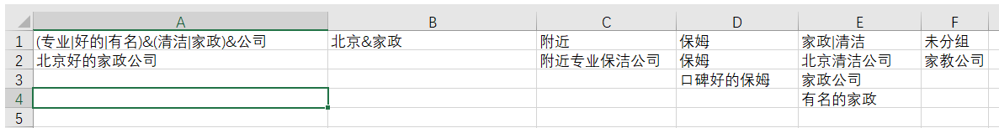
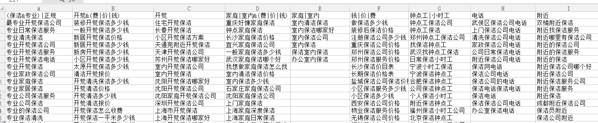

需求很简单：
有一堆关键词（短句），需要给它们分组。分组逻辑很简单：给出一些归类词语，把包含这些归类词语的关键词归到一类。
归类词语需要支持简单的与或算术逻辑，例如“日记|博客”，意思就是把包含日记或者博客关键词归到一类。
例如这两个关键词都符合归类要求：日记软件，博客工具
又如：“社保&药店”，意思是把包含社保又包含药店的关键词归到一类。
例如：北京的社保药店就符合归类要求，但如果只是北京社保局就不符合归类要求
再如：“(日记|博客)&(社保&药店)”，意思是把即符合“日记|博客”归类要求，又符合“社保&药店”归类要求的关键词归到一类。
一个实际例子：
现在有下面的关键词：
附近专业保洁公司
北京清洁公司
家政公司
北京好的家政公司
保姆
家教公司
有名的家政
口碑好的保姆
归类词语如下：
(专业|好的|有名)&(清洁|家政)&公司
北京&家政
附近
保姆
家政|清洁
分类结果如下：

这是另一个案例分词结果截图：

其实这个需求在linux下直接用grep工具加上简单的shell还是很容易做的，但让我朋友为了这个从头学shell和linux不太现实，所以我帮他做了这个工具。如果有人有兴趣也可以去下载：
下载地址：
链接：https://pan.baidu.com/s/1r6YR8qJGOBxvA9GDPsevzw
提取码：8dmn
===============================================
下面是相关代码，里面用到了中序表达式转成后序表达式计算的技巧
stdafx.h
1 // stdafx.h : 标准系统包含文件的包含文件，
2 // 或是经常使用但不常更改的
3 // 特定于项目的包含文件
4 //
5
6 #pragma once
7
8 #include "targetver.h"
9
10 #include <stdio.h>
11 #include <tchar.h>
12
13 #define NUMOF(arr) (sizeof(arr)/sizeof(arr[0]))
14
15
16 // TODO: 在此处引用程序需要的其他头文件
17 #include <string>
18 #include <vector>
19 #include <iostream>
20 #include <stack>
21 using namespace std;
GetWord.h
1 #pragma once
2 #include "stdafx.h"
3
4 #define TYPE_WORD 0
5 #define TYPE_AND 1
6 #define TYPE_OR 2
7 #define TYPE_BOOL 3
8 #define TYPE_LEFT 4
9 #define TYPE_RIGHT 5
10
11 typedef struct
12 {
13 int nWordType;
14 string sValue;
15
16 void output()
17 {
18 switch (nWordType)
19 {
20 case TYPE_WORD:
21 cout << "TYPE_WORD " <<sValue << endl;
22 break;
23 case TYPE_AND:
24 cout << "TYPE_AND" << endl;
25 break;
26 case TYPE_OR:
27 cout << "TYPE_OR" << endl;
28 break;
29 case TYPE_BOOL:
30 cout << "TYPE_BOOL" << endl;
31 break;
32 case TYPE_LEFT:
33 cout << "TYPE_LEFT" << endl;
34 break;
35 case TYPE_RIGHT:
36 cout << "TYPE_RIGHT" << endl;
37 break;
38 default:
39 cout << "unknow" << endl;
40 break;
41 }
42 }
43 }ST_WORD;
44
45 class CGetWord
46 {
47 public:
48 CGetWord(const char *str);
49 ~CGetWord(void);
50 void rewrind(); //重置到开头
51 bool getWord(ST_WORD &opr); //读取一个单词
52
53 private:
54 char *m_strInput;
55 int m_nPos;
56 };PostfixExpressions.h
1 #pragma once
2 #include "GetWord.h"
3
4 class CPostfixExpressions
5 {
6 public:
7 CPostfixExpressions(void);
8 bool parse(const char *strIntermediateOrerExpressions); //输入中序 转换成后缀表达式 方便计算
9 bool grep(const char *str);
10 ~CPostfixExpressions(void);
11 void showExpr()
12 {
13 cout << "m_expr.size() = " << m_expr.size() << endl;
14 for (size_t i = 0; i < m_expr.size(); ++i)
15 {
16 m_expr[i].output();
17 }
18 }
19 private:
20 vector<ST_WORD> m_expr;
21 };targetver.h
1 #pragma once
2
3 // 包括 SDKDDKVer.h 将定义可用的最高版本的 Windows 平台。
4
5 // 如果要为以前的 Windows 平台生成应用程序，请包括 WinSDKVer.h，并将
6 // WIN32_WINNT 宏设置为要支持的平台，然后再包括 SDKDDKVer.h。
7
8 #include <SDKDDKVer.h>divide_group.cpp
1 // divide_group.cpp : 定义控制台应用程序的入口点。
2 //
3
4 #include "stdafx.h"
5 #include "GetWord.h"
6 #include "PostfixExpressions.h"
7
8 bool checkHaveNotGbk(const char *buf, const size_t nLen)
9 {
10 //检查是否有非GBK字符（不严谨）
11 //碰到非英文字符
12 bool bHaveNotGbk = false;
13 for (size_t i = 0; i < nLen; ++i)
14 {
15 /*
16 GBK 亦采用双字节表示，总体编码范围为 8140-FEFE，首字节在 81-FE 之间，尾字节在 40-FE 之间，剔除 xx7F 一条线。
17 总计 23940 个码位，共收入 21886 个汉字和图形符号，其中汉字（包括部首和构件）21003 个，图形符号 883 个。
18 */
19 unsigned char ch = buf[i];
20 if ((ch & 0x80) != 0)
21 {
22 if (ch >= 0x81 && ch <= 0xfe)
23 {
24 ch = buf[++i];
25 if (!(ch >= 0x40 && ch <= 0xFe && ch != 0x7F))
26 {
27 bHaveNotGbk = true;
28 break;
29 }
30 }
31 else
32 {
33 bHaveNotGbk = true;
34 break;
35 }
36 }
37 }
38
39 return bHaveNotGbk;
40 }
41
42 char *getline(char *buf, size_t nBufSize, FILE *fp)
43 {
44 if ( fgets(buf, nBufSize, fp) == NULL)
45 {
46 return NULL;
47 }
48
49 size_t nLen = strlen(buf);
50 if (nLen > 0 && buf[nLen - 1] == '\n')
51 {
52 buf[--nLen] = '\0';
53 }
54
55 if (checkHaveNotGbk(buf, nLen))
56 {
57 cerr << "疑似有非GBK编码字符[" << buf << "]" << endl;
58 buf[0] = '\0';
59 }
60 return buf;
61 }
62
63 void outputResult(vector< vector<string> >& vecExprGrepSentence)
64 {
65 size_t nMaxJ = 0;
66
67 for (size_t i = 0; i < vecExprGrepSentence.size(); ++i)
68 {
69 if (nMaxJ < vecExprGrepSentence[i].size())
70 {
71 nMaxJ = vecExprGrepSentence[i].size();
72 }
73 }
74
75 for (size_t j = 0; j < nMaxJ; ++j)
76 {
77 for (size_t i = 0; i < vecExprGrepSentence.size(); ++i)
78 {
79 if (j < vecExprGrepSentence[i].size())
80 {
81 cout << vecExprGrepSentence[i][j] << ",";
82 }
83 else
84 {
85 cout << ",";
86 }
87 }
88
89 cout << endl;
90 }
91 }
92
93 int _tmain(int argc, _TCHAR* argv[])
94 {
95 if (argc < 3)
96 {
97 printf("usage:divide_group 词根文件 关键词文件\n");
98 return 0;
99 }
100
101 bool bSplitMoreFlag = false; //标记一个关键词是否可以被多个词根匹配
102 if (argc > 3 && argv[3][0] == '1')
103 {
104 bSplitMoreFlag = true;
105 }
106
107 vector<CPostfixExpressions> vecExprs;
108 vector< vector<string> > vecExprGrepSentence;
109
110 FILE *fpKey = fopen(argv[1], "r");
111 if (fpKey == NULL)
112 {
113 cout << "词根文件打不开" << endl;
114 return -1;
115 }
116
117
118 FILE *fpSentence = fopen(argv[2], "r");
119 if (fpSentence == NULL)
120 {
121 cout << "关键词文件打不开" << endl;
122 fclose(fpKey);
123 return -10;
124 }
125
126 CPostfixExpressions expr;
127 vector<string> vecGroup;
128 char buf[1024];
129 vecExprs.reserve(100);
130 vecGroup.resize(1);
131
132 while (getline(buf, sizeof(buf), fpKey))
133 {
134 if (buf[0] == '\0')
135 {
136 continue;
137 }
138
139 if (expr.parse(buf))
140 {
141 //暂时不处理
142 }
143 else
144 {
145 cerr << "词根[" << buf << "]异常 忽略" << endl;
146 }
147
148 vecExprs.push_back(expr);
149 vecGroup[0] = buf;
150 vecExprGrepSentence.push_back(vecGroup);
151 }
152
153 if (vecExprs.size() == 0)
154 {
155 cerr << "词根[" << buf << "]文件异常" << endl;
156 return -20;
157 }
158
159 size_t nNoGrep = vecExprs.size();
160 vecGroup[0] = "未分组";
161 vecExprGrepSentence.push_back(vecGroup);
162
163 while (getline(buf, sizeof(buf), fpSentence))
164 {
165 if (buf[0] == '\0')
166 {
167 continue;
168 }
169
170 bool bGrepFlag = false;
171 for (size_t i = 0; i < vecExprs.size(); ++i)
172 {
173 if (vecExprs[i].grep(buf))
174 {
175 vecExprGrepSentence[i].push_back(buf);
176 bGrepFlag = true;
177
178 if (!bSplitMoreFlag)
179 {
180 //关键字匹配到一个词根后就不再继续匹配
181 break;
182 }
183 }
184 }
185
186 if (!bGrepFlag)
187 {
188 vecExprGrepSentence[nNoGrep].push_back(buf);
189 }
190 }
191
192 outputResult(vecExprGrepSentence);
193 fclose(fpKey);
194 fclose(fpSentence);
195 return 0;
196 }GetWord.cpp
1 #include "StdAfx.h"
2 #include "GetWord.h"
3
4
5 CGetWord::CGetWord(const char *str)
6 {
7 size_t nLen = strlen(str) + 1;
8
9 m_strInput = new char[nLen];
10 strcpy(m_strInput, str);
11 m_nPos = 0;
12 }
13
14
15 CGetWord::~CGetWord(void)
16 {
17 delete []m_strInput;
18 m_strInput = NULL;
19 m_nPos = 0;
20 }
21
22 void CGetWord::rewrind()
23 {
24 m_nPos = 0;
25 }
26
27 //获取一个单词
28 bool CGetWord::getWord(ST_WORD &opr)
29 {
30 char ch = m_strInput[m_nPos];
31 if (ch == '\0')
32 {
33 return false;
34 }
35
36 opr.sValue = "";
37 switch (ch)
38 {
39 case '&':
40 opr.nWordType = TYPE_AND;
41 ++m_nPos;
42 break;
43 case '|':
44 opr.nWordType = TYPE_OR;
45 ++m_nPos;
46 break;
47 case '(':
48 opr.nWordType = TYPE_LEFT;
49 ++m_nPos;
50 break;
51 case ')':
52 opr.nWordType = TYPE_RIGHT;
53 ++m_nPos;
54 break;
55 default:
56 int i = 0;
57 opr.nWordType = TYPE_WORD;
58 for (i = m_nPos; m_strInput[i] != '\0'; ++i)
59 {
60 ch = m_strInput[i];
61
62 //碰到操作符，说明关键字结束了
63 if (ch == '&' || ch == '|' || ch == '(' || ch == ')')
64 {
65 break;
66 }
67 else
68 {
69 opr.sValue += ch;
70
71 if (ch & 0x80)
72 {
73 //中文 两个字符
74 ++i;
75 opr.sValue += m_strInput[i];
76 continue;
77 }
78 }
79 }
80 m_nPos = i;
81 break;
82 }
83
84 return true;
85 }
86
87
88 int testCGetWord()
89 {
90 char *strExpr[] = {"(计算机&专业)|广工",
91 "计算机&广东",
92 "计算机|好的|专业"};
93
94 for (int i = 0; i < NUMOF(strExpr); ++i)
95 {
96 CGetWord expr(strExpr[i]);
97 ST_WORD opr;
98
99
100 cout << strExpr[i] << endl;
101
102 while (expr.getWord(opr))
103 {
104 opr.output();
105 }
106
107 cout << "------------" << endl;
108 }
109 return 0;
110 }PostfixExpressions.cpp
1 #include "StdAfx.h"
2 #include "PostfixExpressions.h"
3
4 /*
5 #define TYPE_WORD 0
6 #define TYPE_AND 1
7 #define TYPE_OR 2
8 #define TYPE_BOOL 3
9 #define TYPE_LEFT 4
10 #define TYPE_RIGHT 5
11 */
12
13 const static int compare[6][6] =
14 {
15 0, 0, 0, 0, 0, 0,
16 0, 1, -1, 0, -1, 0,
17 0, 1, 1, 0, -1, 0, //TYPE_OR
18 0, 0, 0, 0, 0, 0,
19 0, -1, -1, 0, -1, 0, //TYPE_LEFT
20 0, 1, 1, 0, 0, 0
21 };
22
23 CPostfixExpressions::CPostfixExpressions(void)
24 {
25 }
26
27
28 CPostfixExpressions::~CPostfixExpressions(void)
29 {
30 }
31
32
33 bool CPostfixExpressions::parse(const char *strIntermediateOrerExpressions)
34 {
35 /*
36 InfixExp(中序表达式)转换PostfixExp(后序表达式)算法：
37
38 1）当输入的是操作数时候，直接输出到后序表达式PostfixExp序列中
39
40 2）当输入开括号时候，把它压栈
41
42 3）当输入的是闭括号时候，先判断栈是否为空，若为空，则发生错误并进行相关处理。若非空，把栈中元素依次弹出并输出到Postfix中，知道遇到第一个开括号，若没有遇到开括号，也发生错误，进行相关处理
43
44 4）当输入是运算符op（+、- 、×、/）时候
45
46 a)循环，当（栈非空and栈顶不是开括号and栈顶运算符的优先级不低于输入的运算符的优先级）时，反复操作：将栈顶元素弹出并添加到Postfix中
47
48 b)把输入的运算符op压栈
49
50 5）当中序表达式InfixExp的符号序列全部读入后，若栈内扔有元素，把他们依次弹出并放到后序表达式PostfixExp序列尾部。若弹出的元素遇到空括号，则说明不匹配，发生错误，并进行相关处理
51 */
52
53 m_expr.clear();
54 m_expr.reserve(100);
55
56 CGetWord expr(strIntermediateOrerExpressions);
57 ST_WORD opr;
58 const ST_WORD *pOprTop;
59
60 stack<ST_WORD> stackOperators;
61 //vector<ST_WORD> vecSymbol;
62
63 bool bExpectWord = true; //第一个元素必须是关键字
64 while (expr.getWord(opr))
65 {
66 switch (opr.nWordType)
67 {
68 case TYPE_WORD:
69 if (!bExpectWord)
70 {
71 cerr << "语法错误1：不期望的关键字" << endl;
72 m_expr.clear();
73 return false;
74 }
75 m_expr.push_back(opr);
76 bExpectWord = false; //不能出现连续关键字
77 break;
78 case TYPE_AND:
79 case TYPE_OR:
80 if (bExpectWord)
81 {
82 cerr << "语法错误2：不期望的操作符" << endl;
83 m_expr.clear();
84 return false;
85 }
86 bExpectWord = true; //不能出现连续操作符
87 case TYPE_LEFT:
88 if (stackOperators.size() == 0)
89 {
90 stackOperators.push(opr);
91 }
92 else
93 {
94 pOprTop = &stackOperators.top();
95
96 while (compare[opr.nWordType][pOprTop->nWordType] > 0)
97 {
98 m_expr.push_back(*pOprTop);
99 stackOperators.pop();
100
101 if (stackOperators.size() == 0)
102 {
103 break;
104 }
105
106 pOprTop = &stackOperators.top();
107 }
108
109 stackOperators.push(opr);
110 }
111 break;
112 case TYPE_RIGHT:
113 if (stackOperators.size() == 0)
114 {
115 cerr << "语法错误3：右括号不匹配左括号1" << endl;
116 m_expr.clear();
117 return false;
118 }
119 else
120 {
121 const ST_WORD *pOprTop = &stackOperators.top();
122
123 while (compare[opr.nWordType][pOprTop->nWordType] > 0)
124 {
125 m_expr.push_back(*pOprTop);
126 stackOperators.pop();
127
128 if (stackOperators.size() == 0)
129 {
130 cerr << "语法错误4：右括号不匹配左括号2" << endl;
131 m_expr.clear();
132 break;
133 }
134
135 pOprTop = &stackOperators.top();
136 }
137
138 //把左括号出栈
139 stackOperators.pop();
140 }
141 break;
142 default:
143 cerr << "语法错误5：未知类型" << endl;
144 m_expr.clear();
145 return false;
146 }
147 }
148
149 if (bExpectWord)
150 {
151 cerr << "语法错误6：缺少关键字" << endl;
152 m_expr.clear();
153 return false;
154 }
155
156 size_t nLeft = stackOperators.size();
157
158 for (size_t i = 0; i < nLeft; ++i)
159 {
160 pOprTop = &stackOperators.top();
161 if (pOprTop->nWordType == TYPE_LEFT)
162 {
163 cerr << "语法错误7：右括号不匹配左括号3" << endl;
164 m_expr.clear();
165 return false;
166 }
167 m_expr.push_back(*pOprTop);
168 stackOperators.pop();
169 }
170
171 return true;
172 }
173
174 bool CPostfixExpressions::grep(const char *str)
175 {
176 if (m_expr.size() == 0)
177 {
178 cerr << "分组错误1，可能是表达式有问题" << endl;
179 return false;
180 }
181
182
183 vector<ST_WORD> expr = m_expr;
184
185 //先把关键字转换成布尔值
186 for (size_t i = 0; i < expr.size(); ++i)
187 {
188 if (expr[i].nWordType == TYPE_WORD)
189 {
190 expr[i].nWordType = TYPE_BOOL;
191 if (strstr(str, expr[i].sValue.c_str()) != NULL)
192 {
193 expr[i].sValue = "1";
194 }
195 else
196 {
197 expr[i].sValue = "0";
198 }
199 }
200 }
201
202 if (m_expr.size() == 1)
203 {
204 return expr[0].sValue[0] == '1';
205 }
206
207 stack<ST_WORD> stackOper;
208 ST_WORD tmpResult;
209 tmpResult.nWordType = TYPE_BOOL;
210 tmpResult.sValue = "1";
211
212 for (size_t i = 0; i < expr.size(); ++i)
213 {
214 if (expr[i].nWordType == TYPE_BOOL)
215 {
216 stackOper.push(expr[i]);
217 }
218 else
219 {
220 if (stackOper.size() < 2)
221 {
222 cerr << "分组错误2，可能是表达式有问题" << endl;
223 return false;
224 }
225
226 const ST_WORD right = stackOper.top();
227 stackOper.pop();
228 const ST_WORD left = stackOper.top();
229 stackOper.pop();
230
231 int nResult;
232
233 if (expr[i].nWordType == TYPE_AND)
234 {
235 nResult = (left.sValue[0] - '0') && (right.sValue[0] - '0');
236 }
237 else
238 {
239 nResult = (left.sValue[0] - '0') || (right.sValue[0] - '0');
240 }
241
242 tmpResult.sValue[0] = nResult + '0';
243
244 //计算结果放回操作数堆栈
245 stackOper.push(tmpResult);
246 }
247 }
248
249 if (tmpResult.sValue[0] == '1')
250 {
251 return true;
252 }
253 else
254 {
255 return false;
256 }
257 }
258
259
260
261
262 void testParse()
263 {
264 char *strExpr[] = {"单词",
265 "双词&与",
266 "双词&或",
267 "三词&与|或",
268 "三词|或&与",
269 "三词&与&与",
270 "三词|或|或",
271 "(计算机&专业)|广工",
272 "计算机&广东",
273 "计算机|好的|专业",
274 "(美丽|专业&低薪)|测试",
275 "(计算机&帅哥)&广工",
276 "(美丽&贤惠|计算机&专业)|广工&北大",
277 "(计算机&帅哥)&广工(美丽&贤惠|计算机&专业)|广工&北大",
278 "(计算机(帅哥&广工))",
279 "((帅哥&广工)计算机)",
280 "计算机(帅哥&广工))",
281 "(计算机(帅哥&广工)",
282 "计算机(帅哥&广工)",
283 "&",
284 "&&",
285 "我&"};
286
287 for (int i = 0; i < NUMOF(strExpr); ++i)
288 {
289 CPostfixExpressions expr;
290
291
292 cerr << strExpr[i] << endl;
293 if (expr.parse(strExpr[i]))
294 {
295 cerr << "语法正确" << endl;
296 expr.showExpr();
297 }
298 else
299 {
300 cerr << "语法错误" << endl;
301 }
302 cerr << "------------" << endl;
303 }
304 }
305
306
307 void testGrep(int argc, _TCHAR* argv[])
308 {
309 char *strExpr[] = {"(计算机&专业)|广工",
310 "计算机&广东",
311 "计算机|好的|专业",
312 "(美丽|专业&低薪)|测试",
313 "(计算机&帅哥)&广工",
314 "计算机&(帅哥&广工)",
315 "(美丽&贤惠|计算机&专业)|广工&北大",
316 "(计算机|(帅哥&广工))",
317 "广工",
318 "我们"};
319
320 char *strInput[] = {
321 "计算机",
322 "黄词辉",
323 "广工",
324 "专业",
325 "黄词辉 计算机 广工毕业 帅哥",
326 "美丽 计算机 广工毕业 贤惠",
327 "专业 计算机 广工毕业 贤惠",
328 "黄词辉 计算机 广工毕业 贤惠",
329 "美丽 计算机 专业 帅哥",
330 "低薪 计算机 专业 帅哥",
331 "黄词辉 计算机 测试 帅哥",
332 "我们曾经一起奋斗 广工"
333 };
334 // testParse();
335 // return true;
336 for (int i = 0; i < NUMOF(strExpr); ++i)
337 {
338 CPostfixExpressions expr;
339
340
341 cerr << "词根：" << strExpr[i] << endl;
342 if (expr.parse(strExpr[i]))
343 {
344 for (int j = 0; j < NUMOF(strInput); ++j)
345 {
346 cerr << "匹配 " << strInput[j];
347 if (expr.grep(strInput[j]))
348 {
349 cerr << " 成功" << endl;
350 }
351 else
352 {
353 cerr << " 失败" << endl;
354 }
355 }
356 }
357 else
358 {
359 cerr << "语法错误" << endl;
360 }
361 cerr << "------------" << endl;
362 }
363 }stdafx.cpp
1 // stdafx.cpp : 只包括标准包含文件的源文件
2 // divide_group.pch 将作为预编译头
3 // stdafx.obj 将包含预编译类型信息
4
5 #include "stdafx.h"
6
7 // TODO: 在 STDAFX.H 中
8 // 引用任何所需的附加头文件，而不是在此文件中引用